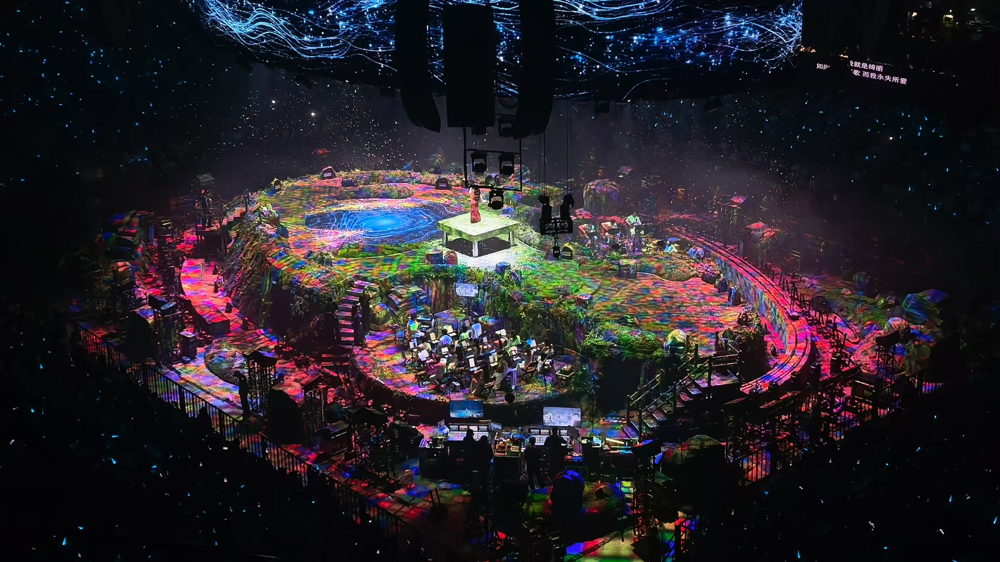

2020 年她是节目里最年轻的冠军；2026 年，她成为首位入围金曲奖最佳华语女歌手的 00 后内地歌手。
| 年份 | 奖项 / 荣誉 | 颁发机构 |
|---|---|---|
| 2020 | 《中国好声音2020》年度总冠军 | 浙江卫视 |
| 2022 | 最佳新锐歌手 | 第 29 届东方风云榜音乐盛典 |
| 2023 | 微博年度突破音乐人 | 2022 微博之夜 |
| 2024 | 最受欢迎女歌手 · 亚洲品质歌手 《想你时风起》十大金曲 | 第 31 届东方风云榜音乐盛典 |
| 2024 | 年度受欢迎歌手 | 微博音乐盛典 |
| 2025 | 《歌手2025》第三名 | 湖南卫视 / 芒果 TV |
| 2025 | 最佳女歌手 | 第 32 届东方风云榜音乐盛典 |
| 2025 | 年度最佳歌手 | WMA 微博音乐盛典 |
| 2026 | 入围第 37 届金曲奖 · 最佳华语女歌手奖 作品《纯妹妹》 | 台北国际唱片展 / 金曲奖 |
| 2026 | 年度十大金曲《珠玉》 | 第七届 TMEA 腾讯音乐娱乐盛典 |
| 年份 | 舞台 / 节目 | 演唱内容 |
|---|---|---|
| 2018 | 《我想和你唱第三季》 | 与李健合唱《绒花》 |
| 2020 | 《中国好声音2020》 | 《永不失联的爱》《城市之光》《好久不见》《星·Sailing》 |
| 2023 | 中央广播电视总台春节联欢晚会 | 合唱《绿水青山》 |
| 2023 | 杭州"小莲花"体育馆 | 首场个人演唱会，连开两场 |
| 2024 | 中央广播电视总台春节联欢晚会 | 继 2023 年后再度登台 |
| 2025 | 个人首轮巡演 · 六座城市 | 成都 / 北京 / 南京 / 深圳 / 济南 / 上海，全部售罄 |
| 2025 | 《歌手2025》 | 以个人作品《珠玉》夺得周冠军，最终第三名 |
| 2025 | 《声生不息·大湾区季》 | 与古巨基合唱《给自己的情书》、与卫兰合唱《你瞒我瞒》 |
| 2025 | 2025 成都世界运动会开幕式 | 与常石磊演唱主题曲《万千》 |
| 2026 | "湾区升明月"大湾区电影音乐晚会 | 大型晚会舞台 |
| 2026 | 湖南卫视中秋之夜 | 演唱《美满一生》 |
从 2025 年的美妆与数码合作开始，到 2026 年密集官宣——顶奢品牌把大使席位给到了一位 00 后华语歌手。
| 年份 | 身份 / 荣誉 | 品牌 / 机构 |
|---|---|---|
| 2025 | 品牌合作 | OLAY 玉兰油 |
| 2025 | 品牌体验官 | HUAWEI 华为 |
| 2026 | 品牌形象大使 该品牌首位 00 后华人歌手大使 | CHANEL 香奈儿 · 2026 年 1 月官宣 |
| 2026 | 全球代言人 | COACH 蔻驰 · 2026 年 2 月官宣 |
| 2026 | 中国区品牌代言人 首位 00 后中国区代言人，并亮相维密大秀 | Victoria's Secret 维密 |
| 2026 | 大中华区品牌代言人 | PUMA |
| 2026 | 入选 BOF500 全球时尚产业影响力榜单 为当年唯一入选的 Solo 女歌手 | The Business of Fashion |
| 2026 | 30 Under 30 亚洲榜 · 文娱与体育 | 福布斯 Forbes |
※ 本节内容依据品牌公开官宣及时尚媒体报道整理，头衔与时间以品牌官方微博、官网公告为准。
参加浙江卫视《中国好声音2020》，于 11 月 20 日获得年度总冠军，由此正式进入演艺圈。
发行录音室专辑《勇敢额度》，从单曲与影视歌曲走向完整的专辑表达。
12 月 22、23 日在杭州"小莲花"体育馆连开两场，完成从节目舞台到个人场馆的过渡。
成都、北京、南京、深圳、济南、上海六站全部售罄，收官站上海实现梅赛德斯-奔驰文化中心三连开。
凭专辑《纯妹妹》入围第 37 届金曲奖最佳华语女歌手奖，是首位入围该奖项的 00 后内地歌手。
